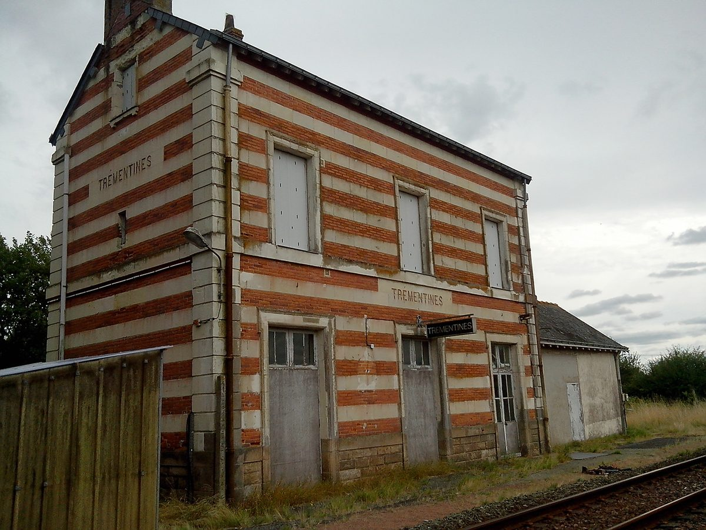

프랑스 트레망틴 면, 어린이집 지붕 36kWc 태양광의 남는 전기를 반경 2km 공공건물 15곳에 나눠 쓴다…면의회 만장일치

'집단 자가소비' 참여 의결, 멘에루아르 도 면간 에너지조합 Siéml을 운영 법인으로 지정…운영비 연 858유로, 계약 20년
프랑스 서부 멘에루아르도의 작은 면 트레망틴이 면 소유 태양광에서 남는 전기를 다른 공공건물과 나눠 쓰는 '집단 자가소비(ACC)'에 참여하기로 하고, 10월 21일 면의회에서 참석 의원 21명 만장일치로 참여와 운영 법인 지정을 의결했다. 면은 어린이집(Maison de l'enfance) 지붕에서 36kWc 규모 태양광을 운영하고 있는데, 지금은 전기를 현장에서 먼저 쓰고 남는 양은 전력망으로 보내고 있다. 앞으로는 이 남는 전기를 반경 2km 안의 학교·면사무소·도서관·마을회관·체육시설·학교식당 등 면 건물 15곳이 나눠 쓴다. 운영은 이미 면의 에너지 계약 입찰과 건물 에너지 진단을 돕고 있는 멘에루아르 면간 에너지조합(Siéml)이 맡으며, 면은 연 750유로에 설치 용량 1kW당 3유로를 더해 지금 설비 기준 연 858유로(세전)를 내고, 패널을 늘리면 비용도 늘어난다. 계약은 20년이고 이후 기한 없이 자동 연장되며, 계약 기간 내내 Siéml이 운영을 독점한다. 니콜라 푸아투 면장은 에너지 소비를 개선하겠다는 선거 공약의 첫걸음이라며, 그동안은 운영 관리가 걸림돌이었다고 말했다.
시민에너지 관점
36kWc짜리 작은 지붕 설비에서 남는 전기를 2km 안 공공건물 15곳이 나눠 쓰는 데 드는 운영비가 한 해 858유로라는 것은, 전기를 만든 건물에서만 쓸 수 있다는 벽을 넘는 비용이 생각만큼 크지 않다는 뜻이다. 작은 면이 전력 정산과 관리를 감당하기 어렵다는 우려는 트레망틴처럼 여러 지자체가 함께 만든 공공 에너지조합에 운영을 맡기는 방식으로 풀 수 있다. 네덜란드는 이웃한 우편번호 지역 주민들이 협동조합으로 함께 발전설비에 출자하면 자기 몫의 전기에 에너지세를 깎아 준 '우편번호 장미(postcoderoos)' 제도로, 내 지붕이 없는 주민도 가까운 공동 설비의 주인이 될 수 있게 했다. 국내도 공공건물끼리, 나아가 주민끼리 가까운 거리에서 전기를 나눠 쓸 수 있게 제도를 열고, 그 설비를 주민이 함께 소유하는 길부터 만들어야 한다.
출처: Le Courrier de l'Ouest (ouest-france.fr) 2026-10-27 기자 미표기 원문 보기
仏トレマンティーヌ村、保育施設屋根の36kWc太陽光の余剰電力を半径2km内の公共施設15カ所で分け合う…村議会が全会一致
「集団自家消費」への参加を議決、メーヌ＝エ＝ロワール県の市町村連合エネルギー組合Siémlを運営法人に指定…運営費は年858ユーロ、契約20年
フランス西部メーヌ＝エ＝ロワール県の小さな村トレマンティーヌは、村が所有する太陽光の余剰電力を他の公共施設と分け合う「集団自家消費（ACC）」に参加することを決めた。村議会は10月21日の会議で、出席議員21人の全会一致により、集団自家消費への参加とその運営法人の指定を議決した。村は保育施設（Maison de l'enfance）の屋根で36kWcの太陽光を運営しており、現在は電気をまず現場で使い、余りは送電網に流している。今後はこの余剰電力を半径2km以内の学校・村役場・図書館・公民館・スポーツ施設・学校給食施設など村の建物15カ所で分け合う。運営は、すでに村のエネルギー契約の入札や建物のエネルギー診断を支援しているメーヌ＝エ＝ロワール市町村連合エネルギー組合（Siéml）が担い、村は年750ユーロに設置容量1kWあたり3ユーロを加えた、現設備で年858ユーロ（税抜き）を支払う。パネルを増やせば費用も増える。契約は20年で、その後は期限なく自動更新され、契約期間中はSiémlが運営を独占する。ニコラ・ポワトゥー村長は、エネルギー消費を改善するという選挙公約の第一歩であり、これまでは運営管理が障害だったと述べた。
市民エネルギーの視点
36kWcの小さな屋根設備の余剰電力を2km以内の公共施設15カ所で分け合う運営費が年858ユーロということは、電気をつくった建物でしか使えないという壁を越える費用が思ったほど大きくないことを示す。小さな村が電力の精算や管理を担うのは難しいという懸念は、トレマンティーヌのように複数の自治体が共につくった公的エネルギー組合に運営を任せる方法で解決できる。オランダは、隣接する郵便番号地域の住民が協同組合を通じて共同で発電設備に出資すると、自分の持ち分の電気にかかるエネルギー税を減らす「郵便番号ローズ（postcoderoos）」制度によって、自宅に屋根のない住民も近くの共同設備の持ち主になれるようにした。韓国でも公共施設同士、さらには住民同士が近い距離で電気を分け合えるよう制度を開き、その設備を住民が共同で所有する道からつくるべきだ。
出典: Le Courrier de l'Ouest (ouest-france.fr) 2026-10-27 記者名表記なし 原文を読む
法国特雷芒蒂讷镇将托儿所屋顶36kWc太阳能的余电分给半径2公里内15栋公共建筑使用…镇议会全票通过
议决参与"集体自发自用"，指定曼恩-卢瓦尔省市镇联合能源组织Siéml为运营法人…运营费每年858欧元，合同20年
法国西部曼恩-卢瓦尔省小镇特雷芒蒂讷决定参与"集体自发自用（ACC）"，将镇有太阳能的余电与其他公共建筑共享。镇议会在10月21日的会议上，以出席议员21人全票通过参与集体自发自用并指定运营法人。该镇在托儿所（Maison de l'enfance）屋顶运营一座36kWc的太阳能电站，目前电力先在现场使用，余电送入电网。今后这些余电将分给半径2公里内的学校、镇政府、图书馆、村民会馆、体育设施、学校食堂等15栋镇有建筑使用。运营由已在协助该镇能源合同招标和建筑能源诊断的曼恩-卢瓦尔市镇联合能源组织（Siéml）负责，镇政府每年支付750欧元，另按装机容量每千瓦加付3欧元，以现有设备计每年858欧元（不含税），增加光伏板费用也随之增加。合同期20年，期满后无限期自动续约，合同期内由Siéml独家运营。镇长尼古拉·普瓦图表示，这是改善能源消费这一竞选承诺的第一步，此前运营管理一直是障碍。
市民能源视角
一座36kWc的小型屋顶设备把余电分给2公里内15栋公共建筑，每年运营费仅858欧元，说明跨越"电只能在发电的建筑里用"这道墙的成本并没有想象中那么高。小镇难以承担电力结算和管理的担忧，可以像特雷芒蒂讷一样，交由多个地方政府共同组建的公共能源组织运营来解决。荷兰曾实行"邮编玫瑰（postcoderoos）"制度，相邻邮编地区的居民通过合作社共同出资建设发电设备，其所占份额的电力可减免能源税，让自家没有屋顶的居民也能成为附近共同设备的主人。韩国也应开放制度，让公共建筑之间乃至居民之间能在近距离内共享电力，并从居民共同拥有这些设备做起。
来源: Le Courrier de l'Ouest (ouest-france.fr) 2026-10-27 未署名 查看原文
French commune of Trémentines to share surplus from 36kWc solar on its childcare centre roof among 15 public buildings within 2km, council votes unanimously
Council approves joining a collective self-consumption scheme and names the Maine-et-Loire intercommunal energy syndicate Siéml as organising body, at 858 euros a year under a 20-year contract
Trémentines, a small commune in the Maine-et-Loire department of western France, has decided to join a collective self-consumption (ACC) scheme that shares surplus power from its municipal solar array with other public buildings. At a meeting on October 21, the municipal council voted unanimously, with all 21 members present in favour, to take part in the scheme and to designate the legal entity that will organise it. The commune operates a 36kWc solar installation on the roof of its childcare centre (Maison de l'enfance); for now the power is used on site first and the surplus is fed into the grid. Under the new arrangement, that surplus will be shared among 15 municipal buildings within a 2km radius, including schools, the town hall, the library, community halls, sports facilities and the school canteen. The scheme will be run by the Maine-et-Loire intercommunal energy syndicate (Siéml), which already handles the commune's energy contract tenders and building energy audits, for a fee of 750 euros a year plus 3 euros per installed kilowatt, or 858 euros a year before tax for the current 36kWc array, rising if panels are added. The contract runs for 20 years, renews tacitly with no end date, and gives Siéml exclusive rights to the role throughout. Mayor Nicolas Poitou said it was a first step toward a campaign pledge to improve the commune's energy use, adding that management had been the obstacle until now.
Citizen Energy View
An annual running cost of 858 euros for sharing surplus from a small 36kWc roof array among 15 public buildings within 2km shows that the cost of breaking down the rule that power can only be used where it is generated is smaller than many assume. Concerns that a small commune cannot handle the metering and management can be met, as in Trémentines, by handing operation to a public energy syndicate set up jointly by several local authorities. The Netherlands' postcoderoos ("postcode rose") scheme cut energy tax on residents' share of power when neighbours in adjacent postcode areas invested together through a cooperative, letting people without a suitable roof of their own become owners of a nearby shared installation. Korea, too, should open the rules so that public buildings, and residents, can share electricity over short distances, starting with ways for residents to own those installations together.
Source: Le Courrier de l'Ouest (ouest-france.fr) 2026-10-27 No byline Read the original